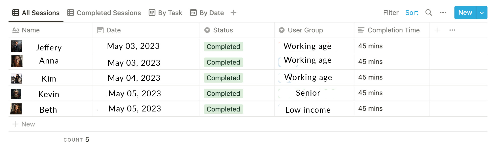
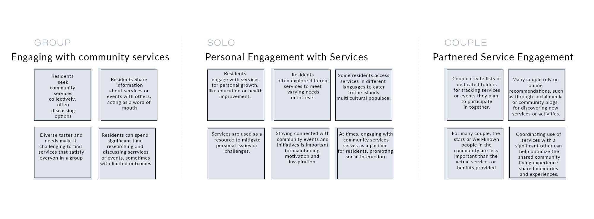
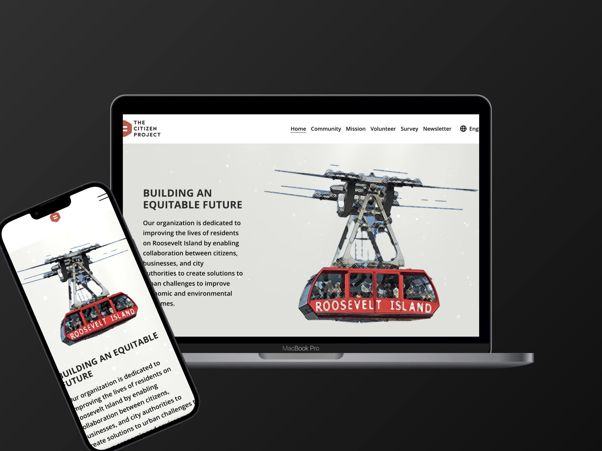
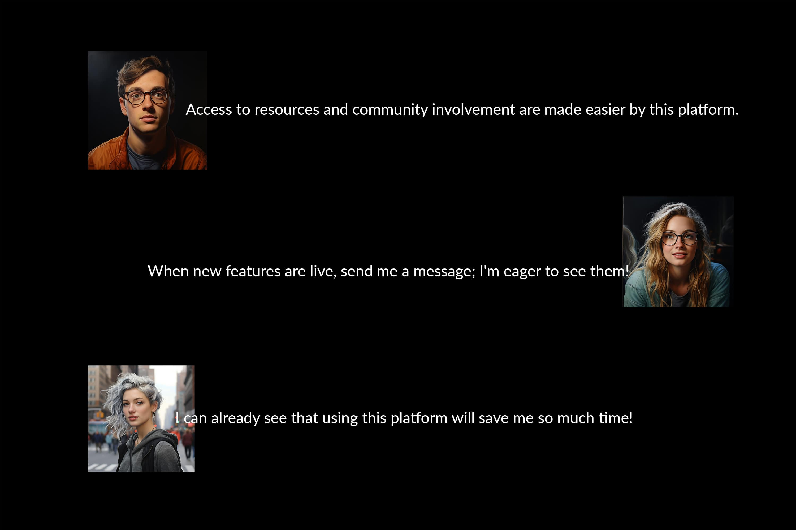

1.Overview
• Problem Statement
Our goal is to make community interaction on Roosevelt Island as easy and
efficient as possible. We are aware that residents may find it challenging and
time-consuming to use local services, offer feedback, and stay in touch with
numerous groups. Furthermore, this issue is made all the more difficult by the
inhabitants' varied demands, preferences, and worries, all of which are subject
to alter depending on the situation or over time.
• Solution
We did an in-depth study over several months, speaking with the people of
Roosevelt Island, looking at various platforms, and assessing the special
qualities of our neighborhood. The five steps of the design thinking process
that we used were empathized, define, ideate, prototype, and tested. After
going through this exhaustive procedure, we have a platform that is
completely functional and has been customized to the resident's particular
needs and preferences, enhancing their quality of life on the Island. The
platform is currently in use, but we're not finished. As we continue on our
path, we intend to add more features and services and improve the platform
over time to better serve our community.
Residents of Roosevelt Island can interact with community services,
offer comments, and stay in touch with nearby groups using our
platform. Our finished solution is a user-friendly, personalized digital
hub that optimizes access to crucial services and promotes
intergenerational communication. Our project makes using
community resources simple and enjoyable, completely altering life
on Roosevelt Island.
• Main Features
Community Portal
Volunteer
• My Role
We conducted initial user research and created low-fi wireframes, followed by hi-fi. Also helped evaluate our designs through usability tests before it was launched,
2. design
We used a design-thinking methodology of 5 phases to solve this problem
• User Interviews
• User Surveys
• Affinity Map
• User Personas
• Brainstorming
• User Flows
• Wireframing
• Visual Design
• Usability testing
• Quantitative usability
3. Empathize
We interviewed a variety of Roosevelt Island locals in-depth to fully understand their
experiences and needs. These 45-minute meetings gave us insightful feedback that
helped us enhance our platform.
STYLE: MODERATED
NUMBER: 5 PEOPLE
DURATION: 45 MINUTES
INTERVIEW TYPE: INTERVIEW
Main questions I asked
• What challenges do you run into while
attempting to access services or
obtain resources on Roosevelt
Island?
• Can you give an example of a time
when you believed the island lacked
basic amenities or services?
• How do you currently receive updates
or news about events happening on
the island, and how could this
process be improved?
Preparation
In order to stay organized and take track
of all sessions, I used Notion

Key Insights
• Residents may find it difficult to
navigate community services on
Roosevelt Island, especially given the
variety of needs and preferences
present in the neighborhood.
• On Roosevelt Island, inhabitants
typically interact with community
• services to meet specific needs or to
improve their quality of life.
• Local blogs or word-of-mouth
networking are frequently used by
Roosevelt Island inhabitants to learn
about local services and changes.
• Residents frequently use a variety Of
personal techniques to keep track of
neighborhood activities and services.
• such as making specific web browser
bookmarks or folders for quick
acxess.
We received a crucial insight from our investigation. It turned out
that our first hypothesis—that locals predominantly relied on
reputable sources or authorities for community updates—was false.
Instead, we discovered that locals place great importance on in-the-
moment, local activities and events while seeking information..
4. Define
To organize research findings, I used an affinity mapping technique. I put down each
insight on one sticky note, found patterns, and grouped them together. As a result, I got 3
main user groups

For each user group that we discovered, we developed a persona. See the example of
one representative of the group
.jpg)
5. Ideate
To evaluate the market and get more accurate ideas at the ideation stage of the design-thinking process, we conducted a competitor analysis
.jpg)
After careful consideration, we created a platform layout with discrete, simple-to-use tabs
and pages for the Community Forum, Event Calendar, Local News, and Community
Resources. This architecture streamlines community contact and resource accessibility for residents by combining all elements of community participation and information into a
single, user-friendly interface.

Once we had a clear idea of our users and their needs, we were able to ideate on a final
user flows

6. prototype
We created low-fi wireframes, followed by hi-fi with Figma, so we can test out our idea
.jpg)
7. Usability Testing
To see how people interact with wireframes and whether the product idea meets their
expectations, I conducted several iterations Of usability testing.
Main Tasks we asked to complete
1. Promote Community Conversation
2. Consolidate local news
3. Streamline Resource Access
8. Reflection

• Outcome
Navigating community resources and news on Roosevelt Island is the main difficulty that
we have successfully addressed by developing a responsive website, Both the idea and
the website itself were met with a great deal of positive feedback. understand that
despite our success, there may still be functions and components that might be
enhanæd or added in order to better serve our users. It will be crucial to come back to
this project in the future to make more improvements and to keep confirming its
usefulness with our users.
• Takeaway
We took a slick, straightforward approach to the website's design, fully embracing the
minimalist 100k. In order to ensure that users could quickly navigate the website and get
what they needed without difficulty, we wanted to get rid of any potential clutter or
confusion. The jnain emphasis is on usability and functionality to provide a seamless and
satisfying user experience. Ofcourse, we also wanted to make it visually appealing, so
we gave it a fresh, contemporary style that feels warm and pleasing to the eye.

 1.png)